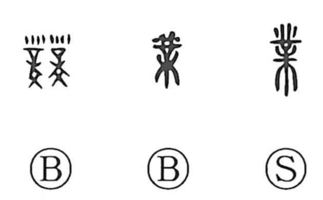

Explanation
業 pictures the apparatus on which musical instruments were hung. A toothed crosspiece rests upon a substantial stand, its projections supporting bells or other instruments. The decorated rack provides the character's visible form.
A tool used to pound earth in rammed-earth construction had a similar shape. Held in the hands, it struck the earth firm between boards, building a wall layer by layer. From this major undertaking come the connection with work and an enterprise.
業 extends to a task, occupation, achievement, or the foundation of a new dynasty. In Buddhist use, gō concerns the effects of action continuing across lives. The practical work and the later religious vocabulary both centre on what is done and what its doing brings about.